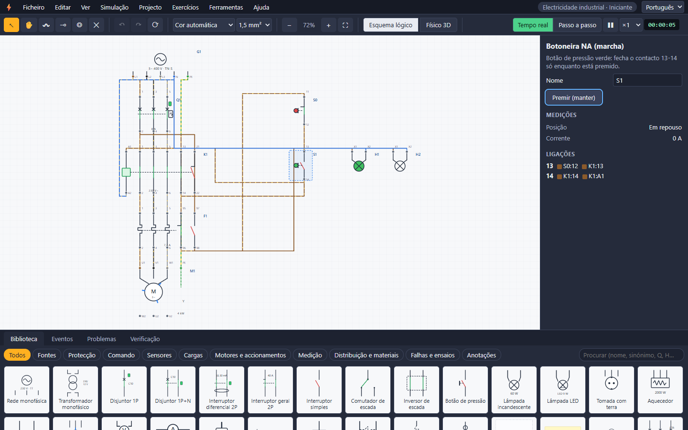
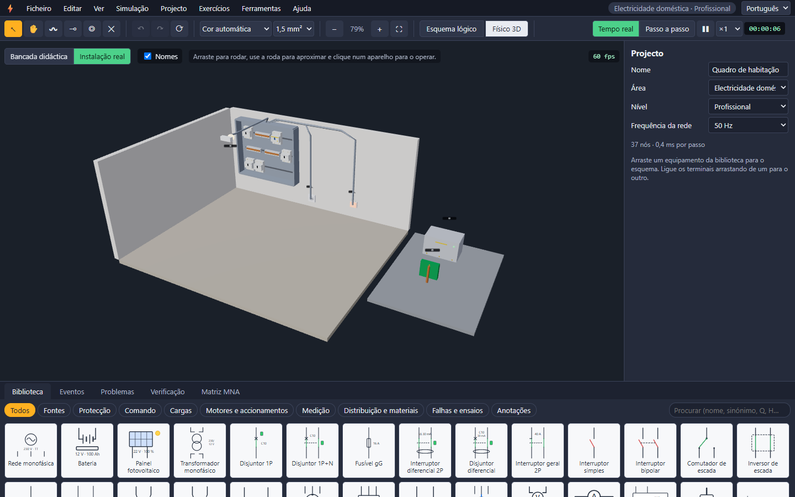
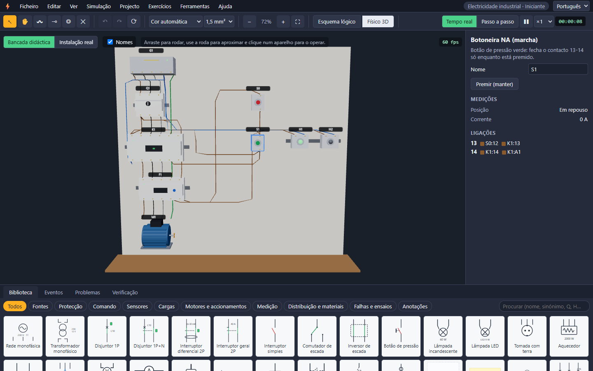

Equipamentos reais
Disjuntores, diferenciais, contactores, relés térmicos, motores, variadores, autómatos, painéis solares e aparelhos de medida, com os símbolos da IEC 60617.
Simulador didáctico de instalações eléctricas
O Faísca Tracer simula instalações domésticas e industriais com equipamentos reais. Ligue cabos, opere interruptores e protecções, meça tensões e correntes e veja o resultado num esquema 2D e numa vista física 3D.

O que é
Como numa bancada de ensaio, monta-se o circuito com aparelhos reais e liga-se a alimentação. A diferença: nada se estraga, e cada defeito vem com uma explicação.
Disjuntores, diferenciais, contactores, relés térmicos, motores, variadores, autómatos, painéis solares e aparelhos de medida, com os símbolos da IEC 60617.
Tensões, correntes, potências e quedas de tensão saem das fórmulas da electrotecnia. Cada valor pode ser confirmado à mão.
Quando algo dispara ou não funciona, aparece uma mensagem curta: o que aconteceu, onde, porquê e o que fazer.
O mesmo projecto numa bancada didáctica ou numa instalação real. Clique num aparelho para o operar e veja a lâmpada acender ou o motor rodar.
Enunciado, objectivos verificados automaticamente e pontuação. Os formadores criam os seus exercícios sem programar.
Regras indicativas da IEC 60364: Ib ≤ In ≤ Iz, quedas de tensão, diferencial de 30 mA nas tomadas, ligação das massas à terra.
Duas áreas

Habitação e comércio: ponto de luz, comando de escada, tomadas com terra, quadro com diferencial, protecção de pessoas em TT, dimensionamento de cabos e sistema solar com bateria.

Motores e comando: arranque directo com auto-retenção, inversão de marcha, estrela-triângulo, variador de frequência, correcção do factor de potência e autómato programável em ladder.
Para quem
O mesmo simulador serve os dois perfis. No nível Iniciante a interface mostra o essencial; no nível Profissional mostra tudo.
De cursos técnicos e de engenharia. Um tour guiado ensina a montar o primeiro circuito fazendo, passo a passo, e os erros transformam-se em explicações.
Em centros de formação, escolas e universidades. Exemplos prontos, exercícios com correcção automática, ficheiros protegidos contra alteração e relatórios para imprimir.
Electricistas, técnicos de manutenção e engenheiros que querem testar um esquema de comando ou de potência antes de o montar.
Como usar
Os projectos gravam-se em ficheiros .fast. Um projecto começado no navegador abre na aplicação, e vice-versa.
Instala-se no computador e funciona sem internet. Abre e grava projectos directamente nas suas pastas. Indicada para salas de formação sem rede e para uso diário.
.fast abrem com duplo cliqueVersão 1.1.0 · instalador de 210 MB · outras versões e notas
Sem instalar nada. Abre numa nova aba, em qualquer computador. Indicada para experimentar, para aulas em computadores partilhados e para mostrar um circuito a alguém.
.fastAbre numa nova aba
O Faísca Tracer é uma ferramenta didáctica. Não substitui o projecto de uma instalação segundo o regulamento.